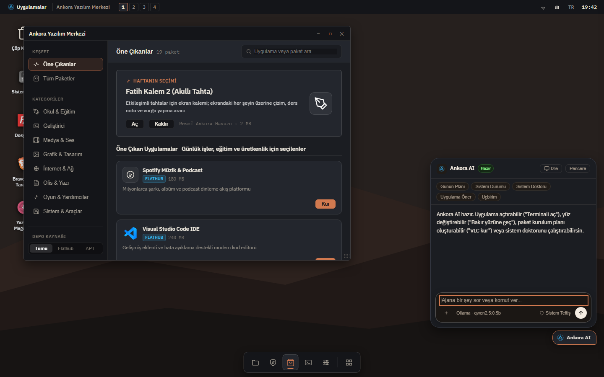
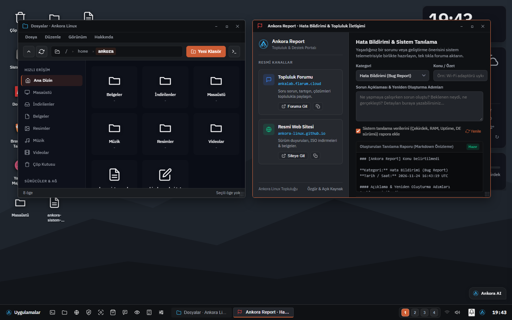

Спокойный турецкий рабочий стол без systemd.
Ankora Linux 5.0 работает на Devuan 6 Excalibur и Linux 6.12 LTS со средой AyazDE 5.0, четырьмя обликами оформления, контролируемым ИИ-агентом и 559 пакетами.





Спроектирована для чистоты интерфейса и надёжности
Лёгкое ядро Rust Tauri 2.0 и WebKitGTK 4.1
Весь рабочий стол работает в одном файле (/usr/bin/ayaz-de). Закрытые окна выгружаются из DOM за 30 секунд; при ОЗУ до 4 ГБ включается ZRAM (zstd/lz4).
Четыре облика и пузырь Ankora ИИ
При запуске активен Bostan; в один клик доступны Bakır, Cıvata, Arduvaz и классический вид 4.7. В правом нижнем углу каждого облика встроен пузырь ИИ.
Готовность для школ и периферии
Поддержка сенсорных досок FAZ 1/2/3 (eta-touchdrv), очистка сертификатов MEB (~/.pki/nssdb), Fatih Kalem 2, CUPS и SANE.
Всё нужное уже после первого запуска
Повседневные инструменты для дома, разработки и класса объединены в AyazDE 5.0.
- Файловый менеджер с автомонтированием USB и графической установкой .deb/.AppImage
- Магазин на 559 пакетов из Devuan APT, Flathub и официального репозитория
- 24 системные темы, 19 обоев и 4 архитектуры рабочего стола
- Системный ассистент Ankora ИИ (локальная Ollama или облачные API) с токеном на 60 секунд
- Динамический островок сверху для медиа, загрузок и ОЗУ (5 способов отключения)
- Защищённый обновитель с откатом (rollback), блокировкой системных дисков USB и pkexec
Ориентировочное сравнение с популярными рабочими столами
Ankora 5.0 использует SysVinit без фоновых служб systemd и сжимает память через ZRAM.
| Дистрибутив | ОЗУ в простое |
|---|---|
| Ankora Linux 5.0 (AyazDE) | ~750 МБ |
| Ubuntu 24.04 (GNOME) | 830 МБ |
| Linux Mint 22.1 (Cinnamon) | 888 МБ |
| Xubuntu 24.04 (Xfce) | 668 МБ |
| Debian 12 (GNOME) | более 1 ГБ |
Ankora 5.0: целевой показатель (~750 МБ) после перехода на Tauri 2.0 и Devuan 6 Excalibur. Прочие цифры по открытым замерам Android Authority (10/2024).
Готово за три шага
Скачайте
Получите ISO-образ и SHA256SUMS со страницы GitHub Releases.
Запишите на USB
Проверьте сумму sha256sum и запишите на съёмный USB-накопитель.
Загрузитесь и установите
Загрузитесь с флешки; с версии 4.7.x можно обновиться пакетом .deb.
Частые вопросы
Что такое Ankora Linux 5.0?
Свободный дистрибутив без systemd на базе Devuan 6 Excalibur и Linux 6.12 LTS со средой AyazDE 5.0.
Подходит ли для старых компьютеров?
Да. Целевое потребление в простое ~750 МБ, при памяти до 4 ГБ включается ZRAM; комфортный минимум от 2 ГБ ОЗУ.
Система бесплатна?
Да, полностью бесплатна и открыта под лицензией GPL-3.0.
Можно ли обновиться с 4.7.x?
Да, через Ayaz Updater или ayaz-de-latest-amd64.deb; с ветки 4.6.x (Daedalus) требуется чистая установка.